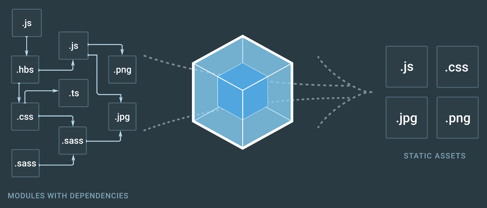

들어가기에 앞서
이 포스트들에서 말하는 내용들은 전부 배포용 파일에 적합한 작업이다.
이런 압축 작업을 개발용 버전에서 매번 빌드할 때마다 실행하면 빌드 시간이 매우 느려지기 때문이다.
우리는 (Webpack 2) 트리 쉐이킹을 해보자!에서 모듈 전체가 로딩 되는 CommonJS 방식에서
모듈의 필요한 부분만 로딩하는 ES2015 Native Module 방식을 사용하는 법을 배웠다.(Tree Shaking)
또한 (Webpack 2) 코드를 분할해보자!에서 공통된 라이브러리를 분리시켜 사용자가 재접속시 캐싱을 적극 활용하게 바꿨고,
모든 페이지의 코드를 로딩하는 것이 아닌 페이지를 이동할 때마다 필요한 소스만 로딩하게 끔 청크 별로 코드를 분할하였다. (Code Splitting)
그리고 Webpakc 2가 미완성이라 코드 스플리팅이 제대로 되지 않아 일일이 필요한 모듈 파일을 하나씩 명시해줬어야 했는데,
이를 좀 더 똑똑하게 해주는 바벨 플러그인을 소개한 내용을 (Webpack 2) 트리 쉐이킹을 똑똑하게 해보자! 통해서 보았다.
이번 포스트에서는 이와 더불어 조금이라도 더 소스 코드를 최적화하는 방법을 소개하도록 하겠다.
별로 안 대단해보일 수 있지만, 필자는 상당히 흥미롭게 느낀 내용이다.
혹시 위 3개 포스트를 보지 않은 사람은 따라하지는 않더라도 꼭 읽어보길 바란다.
예제는 아래 깃헙 저장소의 hot-3 브랜치를 기준으로 진행된다.
https://github.com/perfectacle/react-router-4/tree/hot-3
너무나 많은 청크들
위 저장소를 클론 받고 패키지를 전부 설치한 후에 번들링 해보자.
청크 별로 코드를 분할 시켜서 로딩시간을 단축시켰다고 생각할 수 있지만 그렇지 않을 수도 있다.
실제 코드를 로딩받는 시간보다 http 요청을 수십, 수백 회 증가시키는 행위가 오히려 더 로딩시간을 늘리게 될 수가 있다.
http 1.1 스펙에서 하나의 요청당 하나의 응답(js 파일 등등)만 받아올 수 있는데 그 하나의 요청을 위한 비용은 어찌보면
코드 하나를 다운받는 것보다 더 비싼 비용을 지불하게 될 경우가 있다.
우리의 코드가 그렇다. 코드의 용량이 그렇게 크지가 않다면 차라리 하나의 요청으로 일정 크기를 한 번에 받아버리는 게 나을 수 있다.
그렇다, 청크의 최소 용량을 정해주는 것이다.
아래와 같이 웹팩 배포용 설정 파일일 webpack.config.js의 plugins에 아래 내용을 추가해주자.
라우팅 된 컴포넌트의 코드 스플리팅이 안 된 것처럼 보이지만,
앱이 점점 커지고 컴포넌트 수가 급격히 증가하고, 코드의 용량이 증가하다보면
50kb짜리 코드 여러 개로 분할될 것이다.
자바스크립트 코드 압축의 3단계
아래와 같은 코드를 짰다고 생각해보자.
minify(압축)시키면 아래와 같이 변한다.
여기서 한 단계 앞서 나가가서 보통 uglify(난독화)까지 하게 된다.
하지만 여기서 한 단계 더 압축할 수 있다는 사실이 존재한다.
바로 gzip(GNU zip) 알고리즘을 써서 압축하는 것이다.
아래 글을 통해 주의 사항들을 확인해보자.
Gzip에 관하여
주로 유닉스 기반의 운영 체제인 유닉스, 리눅스, 맥 등등에서 많이 쓰인다.
이러한 알고리즘을 써서 js 파일을 gz 파일로 압축하고, 브라우저에서 이 gz 파일을 열게되는 것이다.
브라우저 지원 현황은 아래와 같은데 IE4부터 지원한다니 말 다 했다.
Which browsers can handle Content-Encoding: gzip ?
이를 위해선 서버가 필요한데 섭알못(서버를 알지 못함)이고 자바스크립트가 익숙하기 때문에 노드 js 기반의 서버를 기준으로 설명하겠다.
우선 노드 js에서 gzip 파일을 불러오는 모듈과 웹팩에서 gz으로 압축해주는 플러그인을 설치하자.
그리고 server.js를 아래와 같이 수정해주자.
그리고 웹팩 배포용 설정 파일인 webpack.config.js를 다음과 같이 수정하자.
그럼 위와 같이 gz으로 압축된 vendor 파일을 볼 수 있다.
파일 크기가 너무 작으면 압축을 해제하는데 더 큰 시간을 소모하므로 threshold를 잘 지정해주자.
실제 페이지를 보면 위와 같이 vendor.js의 파일 용량(받은 용량)이 179kb가 아닌 50kb임을 알 수 있다.
이 외에도 chunk의 최대 갯수(코드 스플리팅하는)를 제한하는 LimitChunkCountPlugin 등등이 있으니 궁금한 사람은 더 찾아보길 바란다.